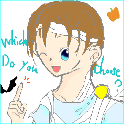
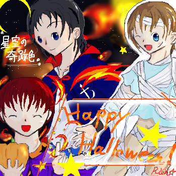

星空の奇跡色。ハロウィーン企画
フリーイラスト配布
下にスクロールして下さいませ。
トリック オア トリート？
T r i c k O r T r e a t ？

ハッピーハロウィーン！！
H a p p y H a l l o w e e n ！！

重い。
うああすいません、劣化が嫌で重たいの承知で無理やり引っ張ってきました･･！
えーと、多分９０KBちょいあります、申し訳ありません；
ええと。改めまして、ハロウィーンイベントの一巻であるフリー絵配布ですが。
本当はもうちょっと大掛かりな物にする予定だったのが、一万HITと被ったおかげで少し規模を縮小してお届けします。
四勇者ズ擬人化仮装です。
･･はい、見事に誰が誰やら状態でございますね！
すいません、ぴったりだという仮装がなかなか見つからなかったと言い訳しておきます。orz
だ、だってカーレッジなんて特にコウモリの翼なんて絶対に似合わないだろうからパスしたけどうーんうーん･･（おい。
えっと。こんなイラストですが、お菓子代わりに配布しております（笑。
保存は、右クリック→名前をつけて画像を保存、でお願いしますね。
転載は、自分のHPに限ってならOKでございます。その際は、私「星詩里音」が描いたという事を、どこかに明記しておいてくださいませ。
報告は必要ありませんが、あると管理人が大喜びします（笑。
えーと、ものすごく重いですので、保存形式を変えたり圧縮率をぐぐっと高くしてくださっても大丈夫です。
いや、やり方が分からないッスよという方は、
TOPに置いてある方ならまだ５０KB程度だと思いますので、そちらをなんとか！（ぐっ。
あ、でも絵に加工を施すのはやめて下さいね。すみっこに落書きするとか（する人いないって。
え？ちなみに言うなら誰が誰だって？
正解はこちらです。
なんでわざわざ別ページかと言うと、文字やキャラの重なりで見えなくなりまくったキャラの全体図も乗っけてるからです。
ただ、残念な事に、無理やり引っ張ってきたので･･。
カーレッジ君、顔がまだない状態なんです（どーん。
そ、そこは勘弁してください。げふげふ。
それでは、よいハロウィーンを！この絵は、配布も遅れてしまったので、１１月半ばごろまで配布しています。
クリスケを白抜きにして立体感と奥行きを出そうとして自爆ing。
･･まとめてフィルタかけた私がバカだった（遠い目。